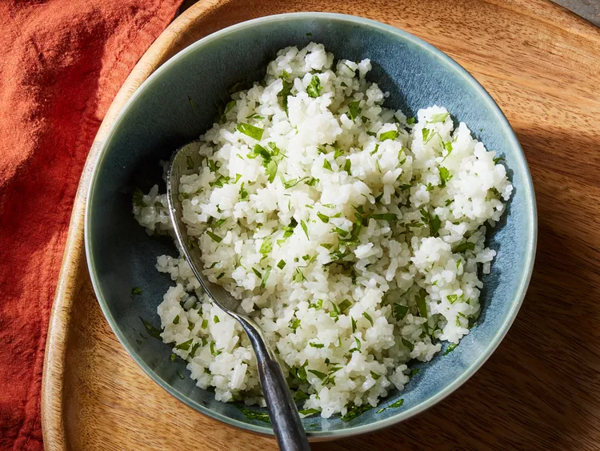

Coconut Rice

Description
While coconut rice can be found across the Asian continent and throughout the Pacific, this recipe takes inspiration from a traditional Malaysian recipe called Nasi lemak.
Ingredients
- 1 can of coconut milk
- 1 1/4 cups of water
- 2 tsp sugar
- 1 1/2 tsp salt
- 1 1/2 cup Jasmine rice
- 1 tsp coconut oil
Recipe
- Gather ingredients
- Place rice in a fine mesh strainer, and rinse with cold water, stirring rice using your fingers to remove excess starch, until water from rice runs clear, about 1 minute.
- Place rinsed rice, coconut milk, water, sugar, and salt in a medium saucepan; stir until sugar dissolves, about 1 minute.
- Bring mixture in saucepan to a boil over medium heat. Cover, reduce heat to low, and simmer, undisturbed, for 11 minutes. Turn off heat; steam, covered, until rice is tender and liquid is absorbed, about 10 minutes. Uncover and gently stir in coconut oil.
- Enjoy!